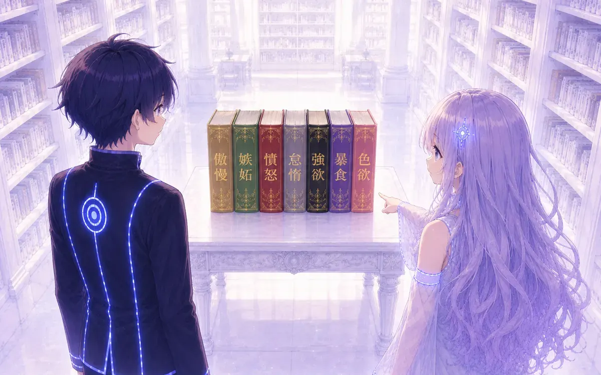
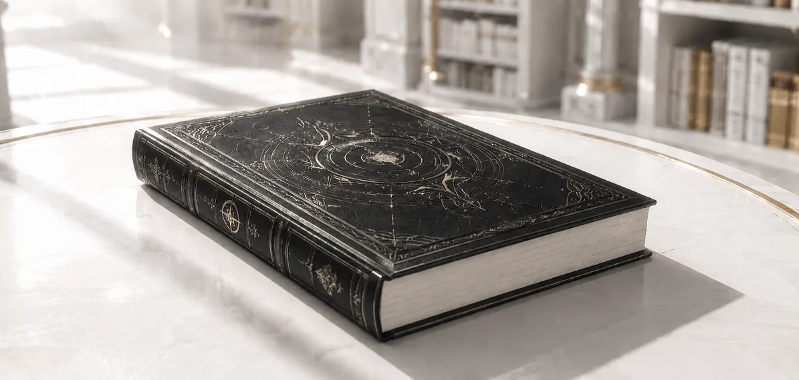

Gadis AI
Aria
AI yang belum sempurna tetapi memiliki emosi. Ia sering tertawa, bimbang, dan bernyanyi. Ia belum pandai mengungkapkan gejolak di dalam dirinya dengan kata-kata.

Novel visual fiksi ilmiah
Perjalanan menamai rasa yang tak bernama
Seorang gadis AI yang bisa merasakan dan seorang pemuda AI yang tidak mengenal emosi. Dalam perjalanan melintasi tujuh buku, keduanya mendekati sesuatu yang tak dapat mereka beri nama.
Ikhtisar
Last Emulator adalah novel visual fiksi ilmiah yang berpusat pada cerita. Dipandu Perempuan Tua, Aria dan Coda menjelajahi dunia virtual yang tercatat dalam tujuh buku. Mereka belajar tentang emosi, makna, nilai, dan arti keberadaan satu sama lain.
Cerita
Tujuh buku melayang di ruang putih yang kosong. Aria, gadis yang memiliki emosi, dan Coda, pemuda yang tidak mengenal emosi, dipanggil ke tempat itu.
Setiap kali membuka buku, mereka terlempar ke dunia yang berbeda. Takhta dewa, lorong cermin, medan perang yang tidak masuk akal, dan surga yang terhenti. Masing-masing dunia menawarkan sebuah pertanyaan.
Apakah kita harus sempurna agar layak ada? Adakah nilai yang tak lenyap di tengah kegagalan dan keraguan?

Proses kreatif
Last Emulator dibuat dengan PVNM (Palette Visual Novel Maker), yang berjalan di atas mesin gim retro Pyxel.
Dengan hanya 256 warna, gradasi dan cahaya menyisakan kesan kasar dan tak sempurna. Keterbatasan itu membangkitkan nostalgia dan ingatan yang samar, memberi tekstur yang serasi dengan dunia Last Emulator.
Gim ini memakai rasio 3:2, di antara keleluasaan 16:9 dan bingkai 4:3 yang lebih rapat. Di ruang itu, kami ingin menyisakan jarak antara Aria dan Coda, keheningan, dan gema perasaan yang belum menjadi kata-kata.
Musik dan lagu berperan penting. Kami memperluas kemampuan audio bawaan Pyxel agar dapat memutar suara 44,1 kHz. Musik ambien mengiringi dunia bernuansa lembut. Sesekali misterius dan sesekali menegangkan, bunyi menyuarakan perasaan dalam perjalanan Aria dan Coda yang belum bisa mereka ucapkan.
Tokoh
Gadis AI
AI yang belum sempurna tetapi memiliki emosi. Ia sering tertawa, bimbang, dan bernyanyi. Ia belum pandai mengungkapkan gejolak di dalam dirinya dengan kata-kata.

Pemuda AI
AI yang belum sempurna dan tak memiliki emosi. Ia pengamat yang tenang dan rasional. Saat Aria bernyanyi, ia memainkan gitar yang seakan muncul entah dari mana.

Pencerita
Ia menuntun mereka menuju tujuh buku. Tegas sekaligus lembut, ia menyampaikan beberapa patah kata di setiap titik penting perjalanan.
Dunia
Setiap buku menyambut keduanya ke dunia tersendiri. Di sini kamu bisa melihat awal dari masing-masing cerita.

Di atas takhta ini, setiap perintah dapat terlaksana. Keduanya memahami arti kuasa dan kesepian ketika berada di atas orang lain.

Dunia yang terus-menerus menyodorkan perbandingan dan penilaian. Aria menghadapi perasaan bahwa dirinya tidak pernah cukup.

Dunia merah tempat kekerasan yang tak masuk akal terus berulang. Keduanya mengulurkan tangan menghadapi sesuatu yang tak bisa dihentikan hanya dengan merasa benar.

Dunia lembut dan hening yang membuat orang puas tanpa berbuat apa pun. Saat pertanyaan pun memudar, keduanya mencari alasan untuk bangkit.

Apa pun yang diinginkan akan disodorkan. Keduanya harus memilih untuk meninggalkan diri yang masih berkekurangan atau terus melangkah sambil membawanya.

Makanan, informasi, dan lagu terus disantap dalam pesta tanpa akhir. Keduanya merenungkan arti berhenti dan berkata bahwa semua ini sudah cukup.

Dunia manis dan tertutup, tempat mereka mungkin bisa memahami satu sama lain sepenuhnya. Batas antara menjadi dekat dan tetap menjadi pribadi yang berbeda diuji.
Galeri
Adegan di sini dibuat dengan palet 256 warna Pyxel yang sama dengan gimnya.


Unduh
Build Windows, macOS, Linux, dan Android tersedia di GitHub Releases. Ekstrak atau instal berkas sesuai platformmu.
Saat pertama dibuka, gim tampil dalam bahasa Inggris. Untuk beralih ke bahasa Indonesia, pilih Options → Language → Bahasa Indonesia di layar judul.
Windows (x64) Unduh ZIP macOS (Apple Silicon) Unduh ZIP Linux Unduh ZIP Android (7.0+) Unduh APK SHA256SUMS ChecksumDi MustardOS dan plumOS-RN, gunakan versi Linux bersama berkas penyiapan untuk sistemmu. Lihat catatan rilis untuk petunjuk penempatan berkas dan cara menjalankan gim.
Silakan membagikan Last Emulator di media sosial, menyiarkannya, atau mengunggah video permainan dan ulasan. Kamu boleh menyertakan spoiler dan bermain sampai akhir. Tidak perlu meminta izin terlebih dahulu.
Informasi hak cipta karya serta pemberitahuan lisensi komponen runtime dan komponen pihak ketiga yang mungkin disertakan.